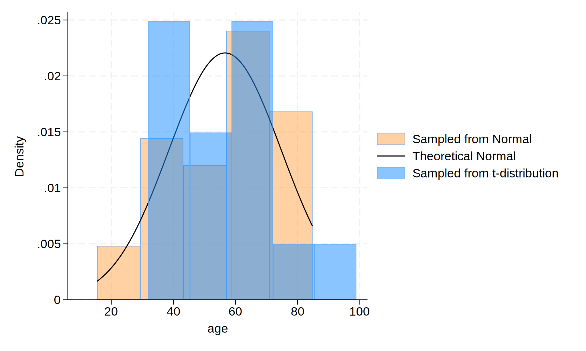

Methods: We initialized our dataset with 30 observations. We then create an age variable with a mean of 57 years and a standard deviation of 15 years. Then, we generated a normal distribution and a t-distribution. Lastly, we visualized the age distribution among the 30 observations using the simulated normal distribution, simulated t-distribution, and theoretical normal distribution.
. // STATA II HW 4
. // Tenzin Lhaksampa
.
. // Clear previous data
. cls
. clear
.
. // Initialize your dataset with 30 observations using the command
. set obs 30
.
. // Create an age variable with a mean of 57 years and a standard deviation of 15
. gen age = (rnormal() * 15) + 57 // normal distribution
. gen age_t = (rt(_N) * 15) + 57 // t-distribution
.
. // Visualize the distribution of age among the observations
. hist age, ///
> fcolor(orange%40) /// simulated normal
> normal /// theoretical normal
> addplot(hist age_t, fcolor(midblue%50)) /// simulated t-distribution
> legend(on ///
> lab(1 "Sampled from Normal") ///
> lab(2 "Theoretical Normal") ///
> lab(3 "Sampled from t-distribution") ///
> )
.
. // Save graph as PNG
. graph export age_histogram.png, replace

. display c(N) 30
. display c(k)
2
. list in 1/5
+---------------------+
| age age_t |
|---------------------|
. . . . . .
**Results:**
We used STATA 18.0 to analyze the data. Among the 30 observations, 2 variables in the analyzed dataset. The distribution of age varies each time the STATA code is run. Note that the distribution of $\text{Age, years} \sim \mathcal{N}(\mu=57,\ \sigma^{2}=225)$.